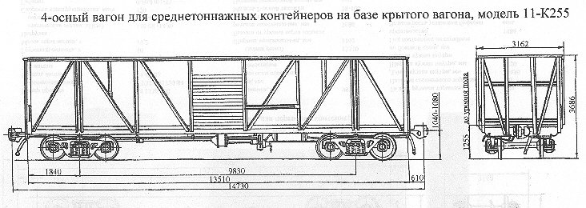

Назначение: для перевозки контейнеров
Параметры
| Номер проекта | М1336.000 |
| Технические условия | ТУ32ЦВ1720-84 |
| Модель вагона | 11-К255 |
| Тип вагона | 920 |
| Изготовитель | АВЗ (переоборудование в ВЧД) |
| Грузоподъемность, т | 40 |
| Масса тары вагона, т | 18,4 |
| Нагрузка: статическая осевая, кН(тс) |
143,08(14,6) |
| погонная, кН/м(тс/м) | 38,9(3,97) |
| Скорость конструкционная, км/ч | 120 |
| Габарит | 0-ВМ(01-Т) |
| База вагона, мм | 9830 |
| Длина, мм: по осям сцепления автосцепок |
14730 |
| по концевым балкам рамы (длина рамы) | 13510 |
| Ширина максимальная, мм | 3162 |
| Высота от уровня верха головок рельсов максимальная, мм | 3686 |
| Количество осей, шт. | 4 |
| Модель 2-осной тележки | 18-100 |
| Наличие переходной площадки | нет |
| Наличие стояночного тормоза | нет |
| Длина кузова внутри, мм | 13430 |
| Ширина кузова внутри, мм | 2750 |
| Высота кузова по боковой стене, мм | 2431 |
| Год постановки на серийное производство | 1984 |
| Возможность установки буферов | есть |